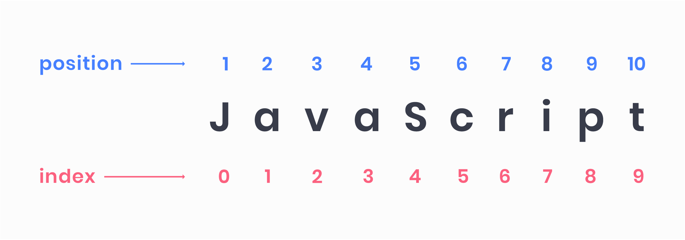

1. Вступ
Рядок — це індексований набір з нуля або більше символів, укладених в одинарні або подвійні лапки.
const name = 'Mango';
Важливо пам'ятати що індексація елементів рядка починається з нуля. Наприклад, в рядку 'JavaScript' буква 'J' стоїть на позиції з індексом 0, а 't' йде під індексом 9.

Вміст рядка можна змінити. Не можна взяти символ посередині та замінити його. Як тільки рядок створений - він такий назавжди. Можна лише створити цілком новий рядок і привласнити в змінну замість старого.
2. Конкатенація рядків
Якщо застосувати оператор + до рядка і будь-якого іншого типу даних,
результатом операції «складання» буде рядок. Ця операція називається
конкатенація, або складання рядків.
Під час конкатенації, будь-який тип даних приводиться до рядка і зшивається з рядком, але є особливість - послідовність запису операндів.
Послідовність операцій має значення, перетворення типів відбувається тільки в момент операції додавання з рядком, до цього моменту діють звичайні правила математики.
const message = 'Mango ' + 'is' + ' happy';
console.log(message); // Mango is happy
// Тепер подивимося на порядок операндів
let result;
result = 5 + '5';
console.log(result); // '55'
console.log(typeof result); // string
result = 5 + '5' + 5;
console.log(result); // '555'
console.log(typeof result); // string
/*
* Зверніть увагу, сталася математична операція
* складання для перших двох п'ятірок, після чого 10 було
* перетворено в рядок '10' і зшито з '5'
*/
result = 5 + 5 + '5';
console.log(result); // '105'
console.log(typeof result); // string
3. Властивості та методи рядків
У кожного рядка є вбудовані властивості і методи, розглянемо деякі з них.
length- властивість, зберігає довжину рядкаtoLowerCase()іtoUpperCase()- повернуть новий рядок у відповідному регістрі, не змінюють оригінальний рядокindexOf()- поверне позицію (індекс) на якій знаходиться перший збіг підрядка або-1, якщо нічого не знайденоincludes()- один з найбільш часто використовуваних методів, в більшості випадків замінюєindexOf, перевіряє чи входить підрядок в рядок, повертаєtrueабоfalse
const message = 'Welcome to Bahamas!';
console.log(message.length); // 19
console.log('There is nothing impossible to him who will try'.length); // 47
console.log(message.toLowerCase()); // welcome to bahamas!
console.log(message.toUpperCase()); // WELCOME TO BAHAMAS!
// При цьому вихідний рядок не змінюється
console.log(message); // Welcome to Bahamas!
console.log(message.indexOf('to')); // 8
console.log(message.indexOf('hello')); // -1
// Всі методи рядків чутливі до регістру
console.log(message.includes('welcome')); // false
console.log(message.includes('Welcome')); // true
4. Шаблонні рядки та інтерполяція
Шаблонні рядки це альтернатива конкатенації з більш зручним синтаксисом. Вони поміщенні у зворотні лапки замість подвійних або одинарних і можуть містити місце заповнювачі, які позначаються знаком долара і фігурними дужками.
// Використовуючи змінні необхідно скласти рядок підперті значеннями
const name = 'Mango';
const age = 2;
const mood = 'happy';
const message =
'My name is ' + name + ", I'm " + age + ' years old and ' + mood + '.';
console.log(message); // My name is Mango, I'm 2 years old and happy.
/*
* Складати рядки зі значеннями, які підставляються
* використовуючи конкатенацію дуже незручно.
* На допомогу приходять шаблонні рядки та інтерполяція.
*/
const sameMessage = `My name is ${name}, I'm ${age} years old and ${mood}.`;
console.log(sameMessage); // My name is Mango, I'm 2 years old and happy.
// В інтерполяції можна використовувати будь-який валідності вираз
console.log(`Результат додавання дорівнює ${2 + 2}.`); // Результат додавання дорівнює 4.